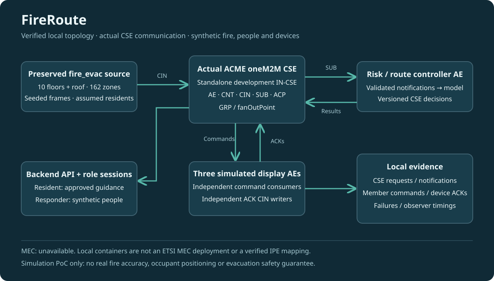
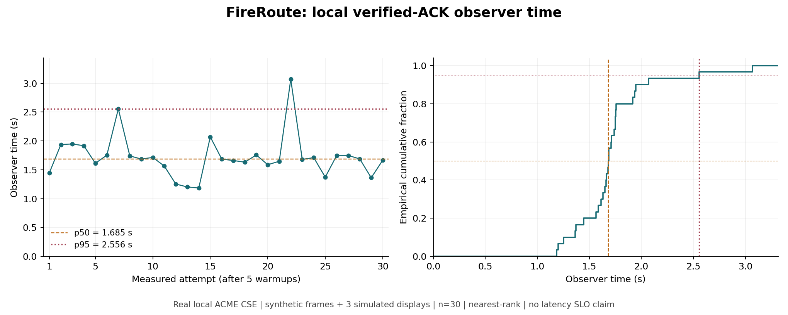

2026 oneM2M × ETSI MEC hackathon · local PoC
FireRoute
Intelligent Fire Evacuation and Rescue Guidance System
Actual oneM2M service coordination.
Synthetic fire, people and display devices.
Explicit evidence of decisions, delivery and failures.
01 · Problem and approach
One observation, coordinated actions
Residents need consistent guidance. Responders need a separate, restricted view of the synthetic scenario.
Compute decisions once, distribute through a real CSE Group, and independently observe each device's application.
The ten-floor model has 162 zones. Geometry, movement and 170 residents are uncalibrated assumptions.
02 · Actual local deployment

03 · Why oneM2M
Use the service layer
- AE / CNT / CIN: distinct producers, consumers and versioned records.
- SUB: actual verification and durable, correlated notifications.
- GRP / fanOutPoint: member-level command distribution.
- ACP: real positive and forbidden resource operations.
- Independent device ACKs: distinguish delivery from application.
04 · Verified natural-hazard scenario
Change routes, then clear directions
| Simulated second | Actual CSE-backed observation |
|---|
| 0 | Baseline fixed-origin route |
| 466 | Alternative avoids blocked F4-SA, via B stairs |
| 600 | Collapsed F4-R6 excluded from traversal |
| 727 | Origin isolated → NO_VERIFIED_ROUTE |
05 · Failure and privacy evidence
Uncertainty stays visible
- Invalid, duplicate and outdated events do not advance the model.
- Expired data removes current guidance and live people.
- Responder history keeps the original timestamp.
- Resident access to private endpoints/resources is denied.
- Controlled CSE stop/start preserves resources and recovers the same incident.
06 · Measured local baseline
30 complete observations after 5 warmups

07 · Reproduce and discuss
A working scope with honest limits
github.com/gaevalja/fire-route
make demo-scenario-up · make verify-local · make verify-clean
Published efc65cb passes clean-archive acceptance: 19/19 stages, including MQTT/discovery, HTTP/HTTPS Chrome (20 checks each) and TLS 1.3/certificate/roles (eight checks). Korean samples are readable. Remote CI and different-machine reproduction remain unverified; MEC deployment/services remain unavailable.
Next integration follows verified platform permissions and APIs. A custom local calculation is not an ETSI MEC service.